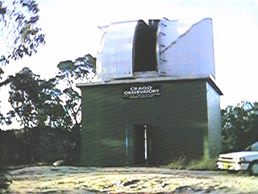
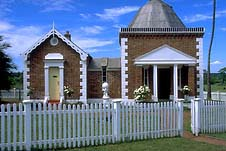
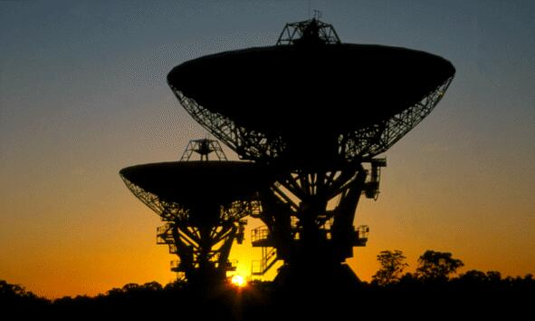

Every year since 1993, the Astronomical Society of New South Wales (ASNSW) hosts the now-famous South Pacific Star Party (SPSP) at Wiruna, their dark sky site. The eighth annual SPSP was held over the weekend of March 31 - April 3, 2000. Your intrepid Ephemeris editors were speakers at this year's South Pacific Star Party. We mingled with the near 400 observers attending the event. This month we'll take you on an Australian walkabout - I mean a scopeabout - through the great observatories of New South Wales, Australia. The ASNSW website, http://www.ozemail.com.au/~asnsw/ is a great place to bookmark. You'll love to refer to it for armchair astronomy or travel plans. You might even make some new email friends down under!
|  |
The observatory of 19th century amateur astronomer John Tebbutt (1834 -1916) was our next stop on the way to the Star Party at Wiruna. It stands 57 km northwest of Sydney. His telescope, an 8-inch Grubb refractor, is still housed at his observatory in Windsor, NSW. Both the wooden and the brick observatories still stand, and the house, built in 1845, is still owned by the Tebbutt family. He discovered the great comets of 1861 and 1881. Tebbutt and his observatory were featured on one face of the Australian $100 note. Website: http://www.walkabout.com.au/fairfax/locations/NSWWindsor.shtml
|  |
Three hours drive north west of Ilford and the Wiruna observing site lies Coonabarabran, the astronomy capital of Australia. Coonabarabran is an aboriginal word meaning inquisitive man. Siding Spring Observatory is a collective name for all telescopes sited on Mt. Woornut, near Coonabarabran. A radio telescope (nearby at Mopra) is part of the Australia Telescope National Facility. The Anglo-Australian Observatory, with the 3.9 meter AAT telescope and the 1.2 meter UK Schmidt Telescope perch on a hilltop in the majestic Warrumbungle National Park. Six other telescopes share the Siding Spring site, 400 KM north of Sydney. These include the Uppsula Schmidt telescope moved from Mt. Stromlo, with its spherical mirror. This telescope was moved from Canberra and Mt. Stromlo in 1980 due to light pollution. The 2.3 meter Advanced Technology Telescope is also here. The Observatory was established here at Siding Spring to take advantage of the extremely dark skies, and to provide the opportunity for astronomers to observe the southern sky where some of the most exciting objects are found, including the centre of our own Milky Way galaxy and our neighbors the Magellanic Clouds. The Siding Spring Exploratory is open 7 days from 9:30 to 4:00 PM. Visit the Exploratory and walk around and view the 3.9 meter telescope from the gallery on the main observing floor. Outside the dome, the metal shipping case for the 3.9 meter mirror rests on the plaza. Ironically, it is labeled "fragile," with a wine glass painted on the bulky exterior. Website: http://www.aao.gov.au/ Don't miss a drive through the National Park, too!
Also in Coonabarabran, is a commercial observatory. Skywatch Observatory and Miniature Golf offers just what you think it will, unfortunately. Website: http://www.lisp.com.au./~skywatch/minigolf/index.html
|  |
The most magnificent of the Australian telescopes is the Parkes Radio Telescope. Parkes is located a couple hours south of Narrabri on the Newell Highway, or 400 km west of Sydney. 37 years old, 64 meters or 210 feet wide, this telescope mostly studies active radio galaxies and the hydrogen, ammonia, silicon monoxide stellar dust and stars in the Milky Way. Website for the great Visitors Discovery Centre http://wwwpks.atnf.csiro.au/home.html. Website for the Parkes Observatory: http://wwwpks.atnf.csiro.au/home.html
The capital of Australia, Canberra, is the home of the Mount Stromlo Observatory. The Stromlo Exploratory is open 354 days a year and has a great cafe! Together, Mount Stromlo and Siding Spring Observatories form one of the leading optical astronomical observatories in the world, 600 km apart. Their main areas of research interest are in stellar and extra galactic astrophysics - in particular, the structure and evolution of stars and galaxies, the origin and development of the universe as a whole, and the physics of the tenuous material between the stars. The observatories have a total staff of about one hundred, most of whom work at Mount Stromlo, where the main workshops and computer laboratories are located. There are about twenty five astronomers on the staff, and an equal number of postgraduate students undertaking Ph.D. studies. Website: http://msowww.anu.edu.au/
South of Canberra is the NASA Deep Space Communication Complex. The Canberra Deep Space Communication Complex (CDSCC) is responsible for the tracking of spacecraft that partake in interplanetary missions. The complex is a NASA facility operated under a USA-Australian government agreement which involves JPL, CSIRO Australia and BAE Systems Australia. It is adjacent to the Tinbinbilla National Park, where you can glimpse the elusive koala, or a mob of kangaroos! Opened in 1965, the complex is home to the largest steerable antenna in the southern hemisphere and the former Honeysuckle Creek antenna which received the first pictures of Neil Armstrong's famous walk on the moon. The facilities at CDSCC are similar to those at Madrid and Goldstone. These three complexes, together with the Jet Propulsion Laboratory, form NASA's Deep Space Network. Website: http://www.cdscc.nasa.gov/
There are many observatories that we missed. We drove right by some, but we saved some observatories for another scopeabout. Visit the ASNSW website for a comprehensive list, or do your own surfing. Website: http://www.ozemail.com.au/~asnsw/misc/observat.htm
We ended our scopeabout back in Sydney. The Sydney Observatory is located on Observatory Hill, in the Rocks, not far from Sydney's famous Circular Quay. Sydney Observatory http://www.phm.gov.au/observe/
It was time for some terrestrial viewing. Sydney is full of history, beauty and great people. A final stop at the Binocular and Telescope Shop at 55 York Street was a fitting end to our astro-honeymoon. Telescope maker Don Whiteman and owners Mike and Lily Smith, welcomed our return and we signed the guest register. Why, we hadn't seen these folks for nearly a week, when we were observing at the South Pacific Star Party of 2000. Website: http://www.bintel.com.au